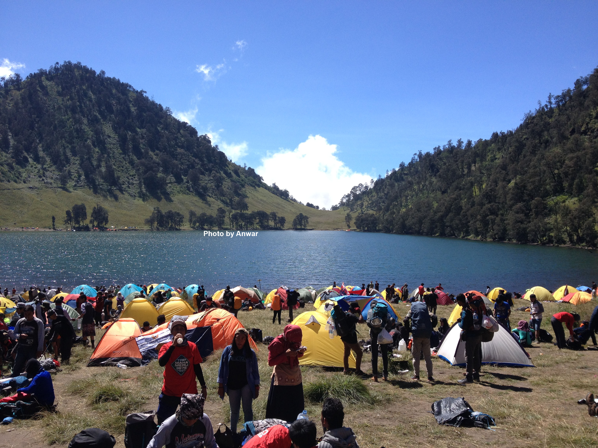
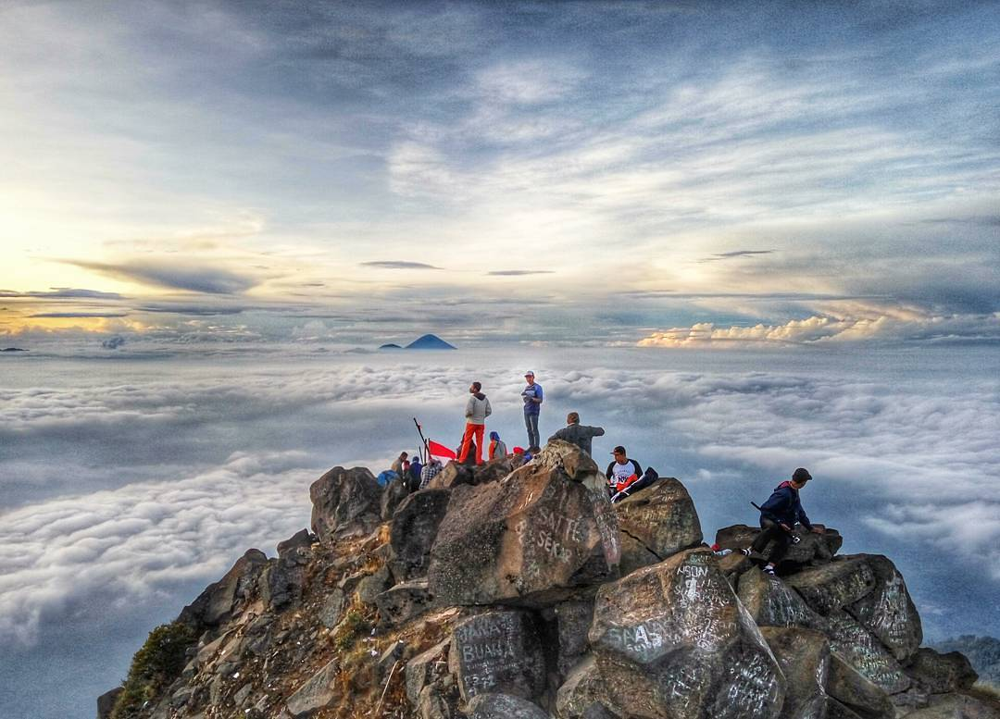
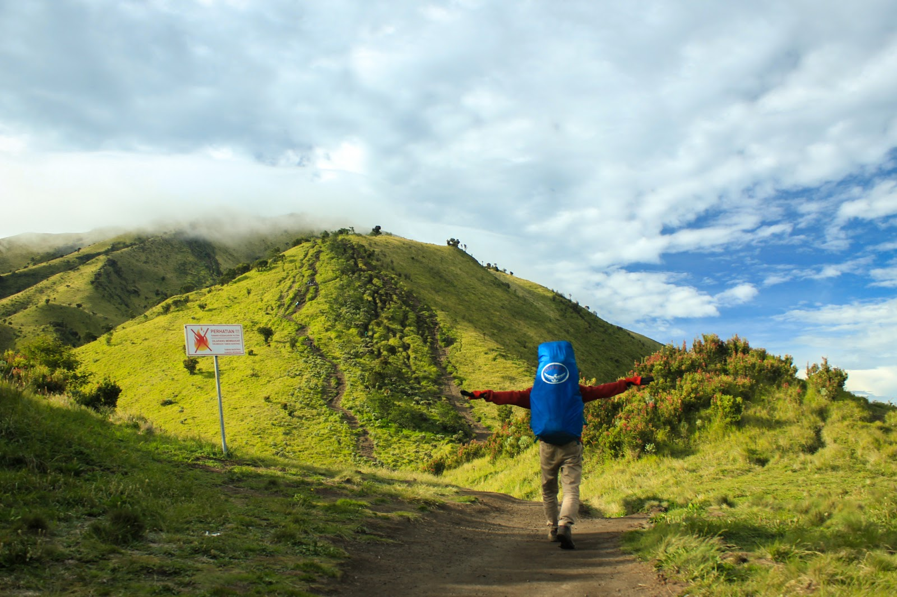
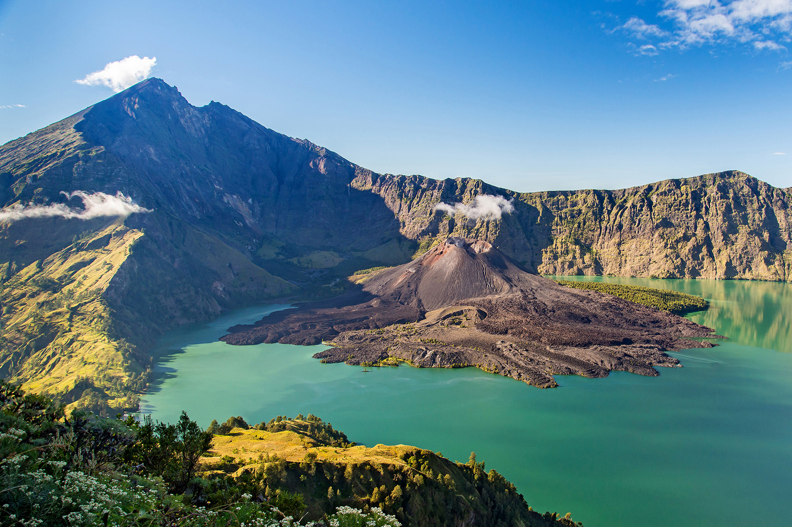

Gunung Semeru atau Gunung Meru adalah sebuah gunung berapi kerucut di Jawa Timur, Indonesia. Gunung Semeru merupakan gunung tertinggi di Pulau Jawa, dengan puncaknya Mahameru, 3.676 meter dari permukaan laut (mdpl). Gunung Semeru juga merupakan gunung berapi tertinggi ketiga di Indonesia setelah Gunung Kerinci di Sumatera dan Gunung Rinjani di Nusa Tenggara Barat[1]. Kawah di puncak Gunung Semeru dikenal dengan nama Jonggring Saloko.

Gunung Arjuno (terkadang dieja Gunung Arjuna) adalah sebuah gunung berapi kerucut (istirahat) di Jawa Timur, Indonesia dengan ketinggian 3.339 m dpl. Gunung Arjuno secara administratif terletak di perbatasan Kota Batu, Kabupaten Malang, dan Kabupaten Pasuruan dan berada di bawah pengelolaan Taman Hutan Raya Raden Soerjo. Gunung Arjuno merupakan gunung tertinggi ketiga di Jawa Timur setelah Gunung Semeru dan Gunung Raung, serta menjadi yang tertinggi keempat di Pulau Jawa.

Gunung Merbabu adalah gunung api yang bertipe Strato (lihat Gunung Berapi) yang terletak secara geografis pada 7,5° LS dan 110,4° BT. Secara administratif gunung ini berada di wilayah Kabupaten Magelang di lereng sebelah barat dan Kabupaten Boyolali di lereng sebelah timur dan selatan, Kabupaten Semarang di lereng sebelah utara, Provinsi Jawa Tengah.

Gunung Rinjani
Savanna Mt. Rinjani 5.JPG
Gunung Rinjani dan sabana di kaki gunung.
Titik tertinggi
Ketinggian 3.726 m (12.224 kaki)[1]
Masuk dalam daftar Ultra
Ribu
Koordinat 8°25′LU 116°28′BT
Geografi
Letak Lombok, Indonesia
Geologi
Jenis gunung Gunung berapi maar (aktif)
Gunung Rinjani adalah gunung yang berlokasi di Pulau Lombok, Nusa Tenggara Barat. Gunung yang merupakan gunung berapi kedua tertinggi di Indonesia dengan ketinggian 3.726 m dpl serta terletak pada lintang 8º25' LS dan 116º28' BT ini merupakan gunung favorit bagi pendaki Indonesia karena keindahan pemandangannya. Gunung ini merupakan bagian dari Taman Nasional Gunung Rinjani yang memiliki luas sekitar 41.330 ha dan ini akan diusulkan penambahannya sehingga menjadi 76.000 ha ke arah barat dan timur.